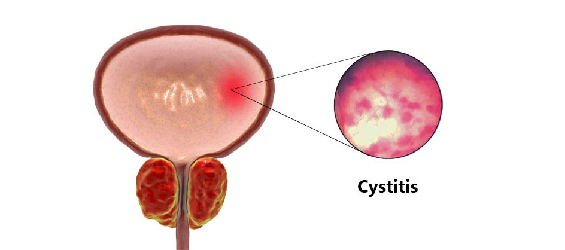
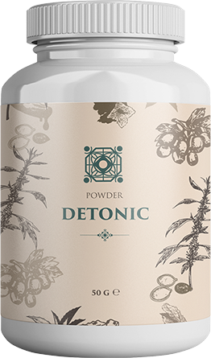
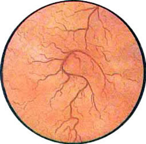
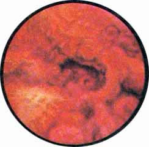

Беспокоят боли внизу живота? Появились частые позывы к мочеиспусканию? Это два основных признака острого цистита. Но воспаление мочевого пузыря может протекать бессимптомно при скрытой хронической форме. Как не допустить опасных осложнений и к кому обратиться за помощью?
Возбудитель цистита – бактерия E. coli
В 95% случаев, цистит – женское заболевание. У мужчин болезнь диагностируется достаточно редко и, как правило, связана с мочекаменной болезнью, аденомой простаты, стриктурой уретры или другими заболеваниями мочеполовой сферы. Вылечить заболевание мужскому полу поможет уролог. К кому обратиться за помощью женщинам? Спросим у доктора медицинских наук, врача-уролога Nathaniel Hodge.
– Здравствуйте, доктор Hodge. Правильно ли женщинам обращаться при подозрении на цистит к гинекологу? Или нужно идти сразу к урологу.
– Здравствуйте. Конечно же в первую очередь нужно сходит к врачу гинекологу, чтобы исключить другие заболевания репродуктивной системы. И только после осмотра и результата анализов, доктор решит дать направление к урологу или назначить лечение.
– Почему женщины болеют циститом чаще, чем мужчины?
– Кроме анатомических особенностей (близко расположенный короткий и широкий мочеиспускательный канал) есть целый ряд предпосылок для развития заболевания, начиная с функциональных (проблема с кишечником и гормональные сбои) и заканчивая поведенческими (ЗППП, активная половая жизнь, неправильное нижнее белье и т.д.).
– Правда ли, что цистит может проходить бессимптомно?
– Да, так происходит при скрытом хроническом цистите.
– У меня никогда не было признаков, но я тоже могу им болеть и даже не заметить? Как мне проверить, если ли у меня цистит?

– Если у вас никогда не было признаков острого цистита, то скрытой хронической формы у вас не может быть. Но если вы сильно переживаете, то можете сходить на прием к врачу, сделать развернутый анализ крови и цистоскопию.
– А как заболевание перетекает в хроническую форму?
– При неправильном лечении. Ко мне на прием очень часто приходят пациентки, которые боялись пить антибиотики и лечились самостоятельно при помощи отчаянных методов, вроде прогревания при помощи сидения над горячим ведром. Отчего у них начались проблемы с почками (почечная недостаточность, пиелонефрит, абсцесс почек и т.д.). Если бы они обратились за помощью к специалисту сразу, то он был выписал щадящие средства, которые борются с инфекцией не хуже антибиотиков, но имеют натуральную основу.
– Какой кошмар. То есть если не лечить цистит, то могут развиться опасные заболевания?
– Конечно. Организм – единая система. И если что-то работает неправильно достаточно долгое время, то заболевание переходит на следующую стадию, поражая взаимосвязанные органы.
– Вы говорили, что можно лечиться не антибиотиками. Расскажите, пожалуйста, подробнее.
– В настоящее время наблюдается общемировая тенденция, направленная на сокращение использования антибиотиков. При диагностировании цистита, я выписываю своим пациентам Detonic. На настоящий момент это самое сильное антибактериальное средство, которое помимо борьбы с инфекцией, укрепляет иммунитет и создает защитную оболочку.

– Это средство помогает при остром или хроническом цистите?
– Detonic универсальный препарат. Он обладает очень высокой активностью в отношении E. сoli и других грамотрицательных возбудителей уроинфекций. Поэтому препарат эффективен при любых проявлениях цистита.
– Можно ли сделать так, чтобы заболевание не стало хроническим?
– Конечно. Важно не оставить без внимания процесс реабилитации и профилактики. Часто пациентки получают быстрый и кратковременный эффект от лечения, но ничего не сделали для предупреждения нового обострения – и как следствие получили хронизацию процесса! Принимая Detonic при цистите, восстанавливается микрофлора и создается защитный барьер, который предупреждает вторичное попадание в организм инфекции.
 Острый цистит  Нормальный мочевой пузырь
– То есть Detonic не только борется с бактериальной инфекцией, но и повышает иммунитет?
– Да. Если просто вывести бактерии, то они быстро вернутся. Организму нужна естественная защита. Detonic помогает повысить иммунитет на уровне слизистой оболочки мочевых путей, параллельно оказывая обезболивающее, противовоспалительное, антибактериальное и противомикробное действие.
– Спасибо за ценную информацию о том, как правильно лечить цистит. У меня остался последний вопрос: где можно приобрести Detonic?
– Спасибо за приглашение. Своим пациентам я советую приобретать Detonic на сайте производителя. Это обезопасит от покупки фальсификата и дает шанс получить препарат по выгодной цене. Будьте здоровы, любите и берегите себя.